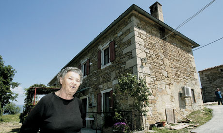
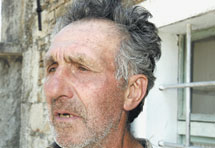
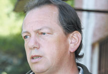

Na obroncima Učke, s posljednjim govornicima istrorumunjskog jezika
Jezik umire kad umre njegov posljednji govornik. Na tu će vas istinu, strašnu u svojoj biologijskoj jednostavnosti, hladno podsjetiti svaki lingvist. Bio je, tako, jedan Indijanac koji 20 godina prije vlastite smrti, kao posljednji govornik svojega jezika, nije imao s kim razgovarati, pa uopće nije govorio.
Bijaše i jedan nesretan događaj za lingvistički kalendar, lakomislenost lingvista Brucea Connela koji je u Kamerunu "pratio" posljednjeg govornika jezika "kasabe" i nije ga posjetio kad je trebao. Baš tih dana čovjek je iznenada umro, s njim i jezik "kasabe," a ne zna se točan datum smrti. U Australiji postoji gotovo pedeset jezika s jednim jedinim govornikom. Unatoč globalnoj brizi, smrt u kuli babilonskoj u sljedećih stotinu godina čeka polovicu današnjih živih jezika.
"Čovjek je lijenčina, ide linijom manjeg otpora. Ništa se tu ne može učiniti," kratko će Goran Filipi, sveučilišni profesor Povijesti talijanskog jezika i dijalektologije iz Pule, kad smo počeli razgovor o neumitnom kraju manjinskih jezika u Istri. Filipi je jedan od onih koje statistika ne fascinira, a mistifikacija "smrti jezika" nervira ga jer je medijski površna. "Nema vam tu ništa zanimljivog". Ljudi žive svoj život kao i svugdje u svijetu, osim što govore i materinskim jezikom koji vi ne razumijete," kaže Filipi u realističnoj maniri mirnog domaćina kontra kolonizatorskih medijskih senzacionalista.
Ima valjda u tome stava šutljive većine stanovnika Istre: za promjenu škrt i pošten iskaz daleko od marketinškog imidža bluzera i berača šparuga, vječnih turoperatora ili kušača vina. Na dvjema različitim stranama poluotoka postoje dvije male jezične zajednice na umoru, u kojima je kondenzirana barem petostoljetna kulturna povijest Istre i još nekoliko stoljeća jezične i etničke povijesti drugih hrvatskih krajeva. Istriotski ili istroromanski i istrorumunjski, kao jedini primjeri u svjetskoj jezičnoj zajednici, najvredniji su dio kulturnog kapitala na tlu Hrvatske, čije se propadanje ne može zaustaviti. Istriotski jezik kao autohtona predmletačka jezična oaza, opstao je u samo šest gradova i naselja jugozapadne Istre (Rovinj, Vodnjan, Bale, Fažana, Galižana, Šišan) i nestaje jer se temeljito venecijanizirao (talijanizirao), njegovi su govornici u pravilu odustali u korist najraširenijeg istrovenetskog (istromletačkog) govora. Unatoč velikoj brizi govornika, istrorumunjski umire logikom ljudskoga vijeka: riječ je o povijesnom rumunjskom dijalektu koji postoji u samo desetak sela i zaselaka. Njegova sjeverna varijanta govori se na sjevernoj padini Učke, na Ćićariji u mjestu Žejane, sjeverozapadno od Rijeke, a južna je raštrkana po ŠuŠnjevici, Novoj Vasi, Jasenoviku, Letaju, Kostrčanima i Brdu na rubu Čepićkoga polja u općini Kršan, blizu Labina.

Miro Belulović iz Šušnjevice najstariji je stanovnik sela u kojem živi trideset ljudi koji govore istrorumunjskim jezikom. Govornike tog jezika u Istri zovu Ćiribircima ili Ćiribirima.
Sjeverni govornici žive u kompaktnoj žejanskoj zajednici. Stotinu je okupljenih u kulturno-umjetničkom društvu poznatijem kao "Žejanski zvončari" i brinu o lokalnom folkoru. U geografskom smislu stanovnici Istre, u administrativnom dio Primorsko-goranske županije, Žejanci su "napredniji" i zadovoljniji članovi istrorumunjske zajednice. Južni govornici istrorumunjskog, u prekrasnim, malim i "razbacanim" selima podno Učke koje smo posjetili, žive svoju manjinsku jezičnu kulturu mnogo rezigniranije, s većim osjećajem zapuštenosti. Nisu to turobni ljudi - njihove vrckaste "privatne verzije" porijekla i povijesnog dolaska zabavit će i one kojima "povijest naroda od stoljeća sedmog" ide na živce.
Službena historiografija kaže da su potomci balkanskih Vlaha. Prvi se put vlaški stočari u Istri spominju u 12. stoljeću, a današnji istrorumunji potomci su Vlaha koji su krajem 15. i početkom 16. stoljeća iz unutrašnjosti Dalmacije, s područja oko Dinare i južnog Velebita, došli najprije na Krk, a zatim i u Istru, na područja opustošena kugom i malarijom. Susjedi Hrvati Istrorumunje oduvijek zovu Vlasima ili Ćiribirima, Ćiribicima. Kako i zašto? "To van dolazi od rumunjskog 'cire bire', što znači drži dobro. Vlasi su bili težaci ili radnici u luci, pa su međusobno tako govorili. A ima i onih koji kažu da je to bio izraz kad, znate, dvojica jednog drže, a treći im kaže 'drži dobro'," objašnjava Berto Mikleuš iz Nove Vasi, kojeg smo probudili u subotnje jutro, nakon noćne zaštitarske smjene.
"Naš jezik govorimo međusobno, mi starosjedioci ovih sela, kad boćamo ili kartamo, ili bezveze razgovaramo. A inače govorimo hrvatski. Kad smo krenuli u školu, bilo nas je 13 djece: nismo znali riječi hrvatskoga. Onda sam se oženil, žena je iz Pazina, razumije malo a ne govori, a kćer ne govori niš vlaškoga," govori Berto Mikleuš. Pa da, žena je kriva. "E, vidite, jezik propada, što je posljedica prestanka partrijarhata," veselo će Mikleuš, a onda se uozbilji i konstatira notorno: ništa se nije ulagalo desetljećima, planiralo se uvesti barem jedan sat rumunjskoga u škole, a sve je propalo.
"Najmlađi govornik 'našega' jezika je moj brat, 1973. godište, koji stanuje u Labinu," govori naš sugovornik koji je uporno ponavljao da "Od slike nema niš! Slikajte Ninu Morić ili nekoga s groblja, mene ne!" upućujući radije na svoje pse, s kojima "ide na tartufe". Susjeda Romanita Skrobe objasnila nam je da je suprug Bruno "pravi govornik po vlaški, a ona ga je morala naučiti jer svekrva nije htjela govoriti hrvatski". U selu Šušnjevica, koje se nastavlja na Novu Vas, najstariji govornik vlaškoga je Miro Belulović (81), po obiteljskoj tradiciji kovač. "Nono mi je bil kovač, stričevi i braća: svi su umrli. Materinji jezik moj je na rumunjski, a neki put govorin tri jeziki na dan: hrvatski, taljanski, rumunjski. Va tu kuću sam rođen," govori barba Miro koji je baš pristavio vodu za ručak očekujući kćer iz Ljubljane: "Ona ne govori baš naš jezik, ali razumi". Znajući da je dobar harmonikaš, pitamo ga da nam odsvira neku rumunjsku pjesmu. "A ća je sad to: za radio ili novine? Ća će van za novine mužika?," govori i hitro uzima harmoniku 'trieštinu," ali rumunjsku pjesmu pjeva nevoljko jer "više voli talijanske, rumunjske nitko ne razumije u Roču," gdje i ove godine odlazi na tradicionalni harmonikaški susret.
Kao totalnom laiku, istrorumunjski vam se čini kao zanimljiv spoj talijanskog, portugalskog, rumunjskog. Belulović je poznat i po vještoj izradi tradicionalnih istarskih (rumunjskih) "vozova" ili vučnih kola od drva: "Dolazili su rumunjski profešuri slušati naš jezik, a i Amerikanci su bili, prodal sam im vozove za 100, 200 dolari," smije se Belulović grleno. Njegovog nećaka Josipa Glavinu našli smo u dobrom društvu ispred lokalne pošte i dućana. Glavina je umirovljen kao rudar iz Tupljaka i Potpićana u svojoj 45. godini.
Jedno se vrijeme, dok "nis izgubil volju" aktivno zalagao za uvođenje vlaškoga jezika u školu.
"Na kongresu s rumunjskim profesorima u Puli 2000. župan Jakovčić je obećao učitelja, bilo kakvu pomoć, samo da naš mjesni odbor kaže što treba. I znate kako to ide. Da ćemo, da ćemo i ništa. Oni u Žejanama imaju sve, mi ništa," tumači Glavina i nastavlja s obiteljskom verzijom dolaska Rumunja. "Došlo je 7 karavana ljudi: 5 ih je ostalo ovdje, 2 su otišle preko Učke u Žejane. Išli su za ovcama, bježali pred Turcima." Objašnjava da je "današnje mlade sram govoriti rumunjski," a on je u kući na zidu stavio veliki plakat na kojem piše "Hvala ča govorite vlaški". I dodaje da je "istrorumunjima lako gledati brazliske sapunice, jer razumiju skoro sve na portugalskom". Njegov prijatelj Branko Lukšić, umirovljeni pomorac i ribar, doživio je zanimljivo lingvističko iskustvo za vrijeme svojih putovanja. "Možda to ne bih smio reći, ali sam po svijetu, u kontaktu s drugim narodima, shvatio da naš jezik ima više veze s jezikom naroda Himalaja, nego s rumunjskim". Ma dajte? "Da. Jednom sam prilikom u Nepalu čuo neke riječi i prepoznao ih. Na nepalskom se "daj mi piti" kaže kao na našem vlaškom. Kad sam to čuo, rekao sam sebi: nije moguće...," ozbiljno će Lukšić, a nastavlja Bruno Kontuš, radnik na održavanju pruga.
"Tu sam rođen, tu ću vjerojatno i umriti. Tata mi je odavde, govorio je rumunjski, a mama mi je Slovenka. I sad, dok se ona privikla na naš jezik, mi smo izgubili volju da je naučimo. A sin mi plovi, niš ne zna rumunjski."
U malom zaselku Miheli koje formalno ne postoji jer više nema ploče s natpisom, samo su dvije kuće. U dvije kuće dvoje ljudi - istarsko selo: dobar bi bio haiku. Nona Tina Ljubičić i Mario Ljubičić susjedi su koji govore hrvatski samo s rijetkim posjetiteljima, inače "vajk pričaju rumunjski".


U selu Zankovci, selu s tek šestoro stanovnika vedrina najstarijeg Đina Klanjca koji se upravo vratio s posla traktorom, pridonosi dobroj atmosferi. "Radio sam čitav život u rudniku, normalna stvar, u Potpićnu. Dojdeš doma, govoriš lipo svoj jezik. Ali se sve počelo otaljavati, djeca nisu htjela učiti, naša se tradicija zatire. I onda mi dojde neka Rumunješka i kaže, po kojem se pitanju zanemaruje rumunjski! Aa, po svakemu, ća ću van reć!" objašnjava dida Klanjac. Konačno, cesta vas od Zankovaca ponese do usamljenog, tihog sela Brdo s jednom jedinom kućom od dvoje stanara. Putem vidite desetak lijepih, ali zatvorenih obnovljenih kuća za odmor što ih koriste američki iseljenici, uglavnom potomci nekadašnjih govornika instrorumunjskog onako naslonjene na kamene ruševine prekrivene bršljanom. A onda izroni nova kapelica i obnovljena crkva s novim zvonom: sve su to uredili američki dolari. S tornja crkve pruža se pogled na čitavu dolinu, pored crkve je veliko i uređeno groblje, a nema žive duše.
Branimira Lazarin
Foto: Srećko Niketić
May 8, 2007
© 2007 Jutarnji